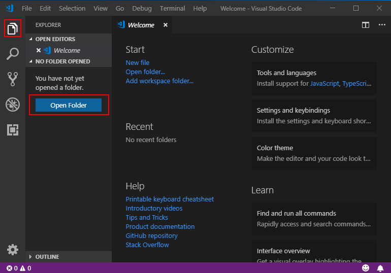
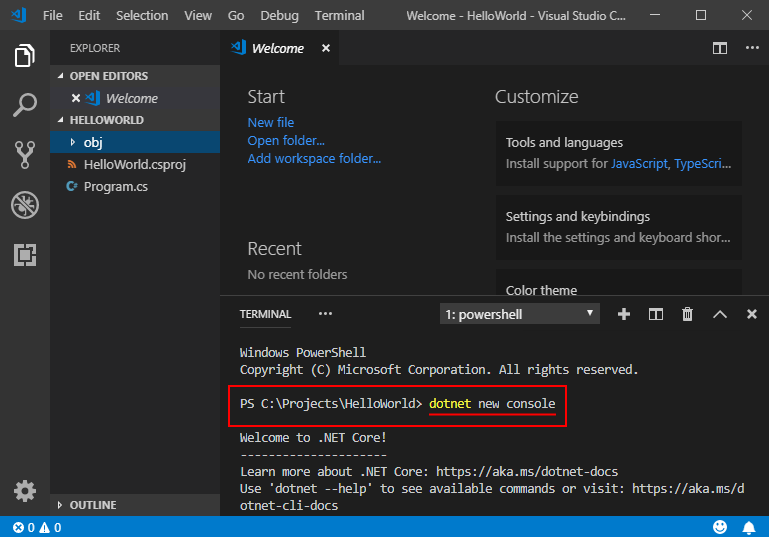
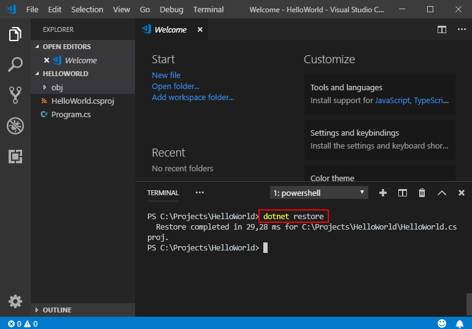
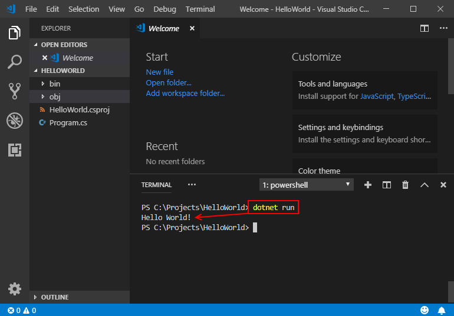
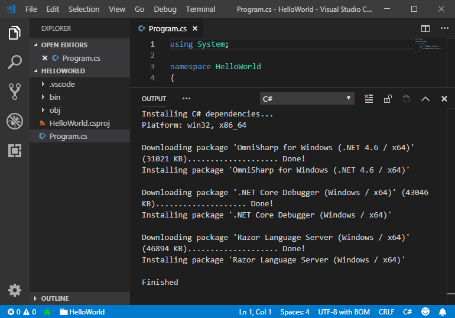
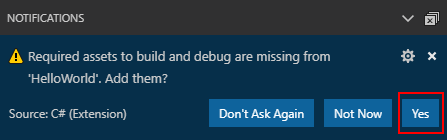
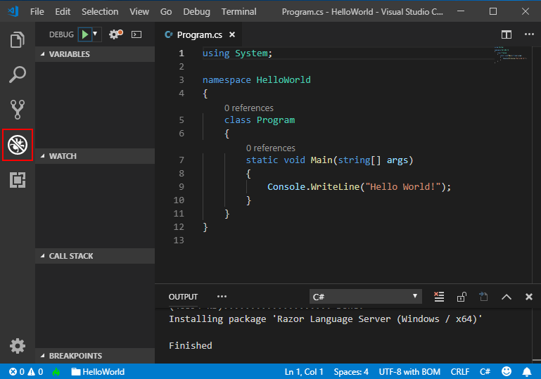
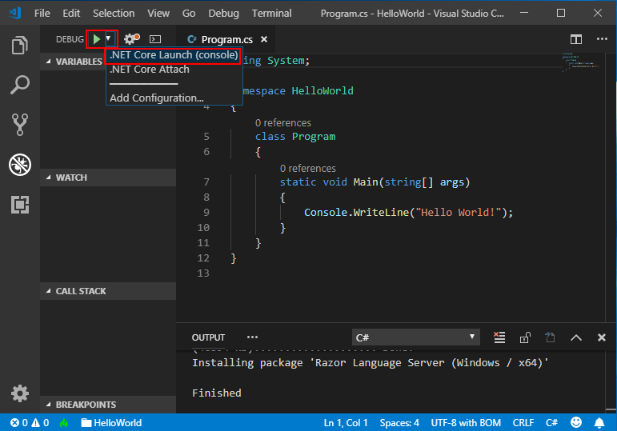
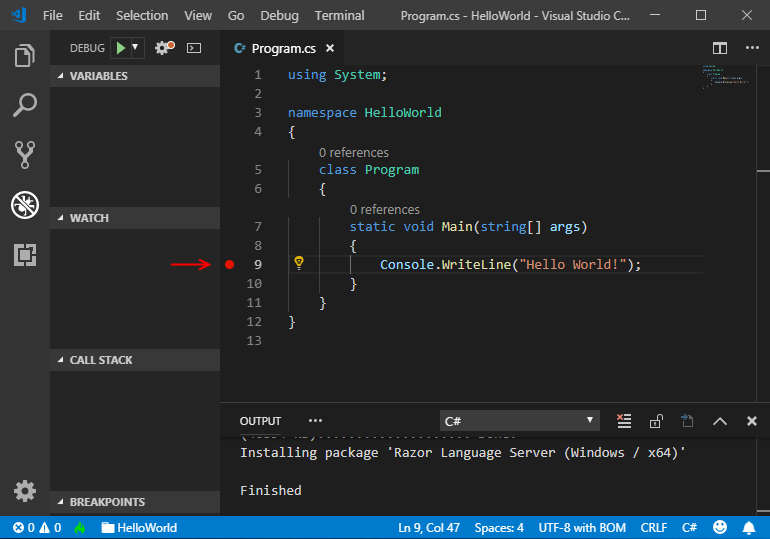
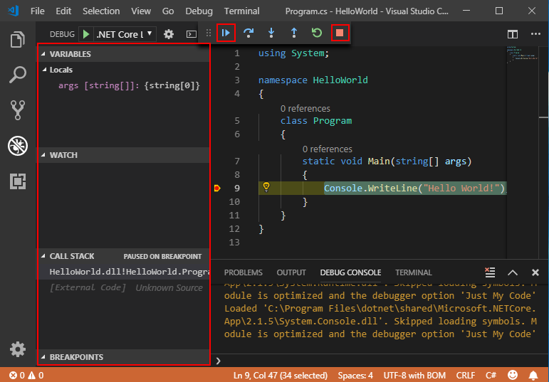

|
.NET Core предcтавляет собой быструю модульную платформу для
создания приложений, работающих на ОС Windows, Linux и macOS.
Visual Studio Code с расширением C# позволяет эффективно
работать с кодом, а также обеспечивает полную поддержку
IntelliSense (интеллектуальное завершение кода) и отладки для
языка C#.
ПРЕДВАРИТЕЛЬНЫЕ ТРЕБОВАНИЯ
-
Установите Visual
Studio Code.
-
Установите пакета
SDK для .NET Core.
-
Установите расширение
C# из Marketplace для Visual Studio Code.
HELLO WORLD
Давайте начнем с создания простой программы Hello World для .NET
Core.
-
Откройте проект.
-
Откройте Visual Studio Code.
-
Щелкните значок обозревателя в расположенном слева меню,
затем щелкните Открыть
папку.
-
Выберите папку, в которой вы хотите разместить проект
C#, и щелкните Выбрать
папку. В нашем примере мы создадим для проекта
новую папку с именем HelloWorld.

* Также вы можете открыть уже существующую папку проекта, используя пункт **Файл** > **Открыть папку** из главного меню.
-
Инициализируйте проект C#.
-
Откройте в Visual Studio Code встроенный терминал, нажав
клавиши CTRL+` (обратный
апостроф). Также можно выбрать в главном меню пункты Просмотр > Встроенный
терминал.
-
В окне терминала введите
dotnet
new console.
-
Эта команда создает в выбранной папке файл
Program.cs с
уже готовой простой программой Hello World, а также файл
проекта C# с именем HelloWorld.csproj.

-
Выполните разрешение для средств сборки:
-
Для .NET
Core 1.1 введите
dotnet
restore. Команда dotnet
restore предоставляет доступ к пакетам .NET Core,
которые необходимы для сборки этого проекта.

-
Для .NET
Core 2.0 этот этап является необязательным.
Команда
dotnet
restore выполняется автоматически при создании
нового проекта.
-
Запустите программу Hello World.

Вы можете просмотреть небольшие видеоматериалы с информацией о
процессе настройки для Windows, macOS,
или Linux.
ОТЛАДКА
-
Откройте файл Program.cs,
щелкнув его. Когда вы в первый раз открываете файл C# в
Visual Studio Code, в редакторе загружается OmniSharp.

-
Visual Studio Code предложит добавить недостающие ресурсы
для сборки и отладки приложения. Выберите ответ Да.

-
Чтобы открыть окно отладки, щелкните значок “Отладка” в меню
слева.

-
Найдите зеленую стрелку в верхней части панели. Убедитесь,
что в раскрывающемся списке рядом с ней выбран вариант
.NET
Core Launch (console).

-
Добавьте в проект точку останова, щелкнув левое
поле редактора кода (пустое пространство слева от
номера строк) в строке 9.

-
Нажмите клавишу F5 или
щелкните зеленую стрелку, чтобы начать отладку. Отладчик
останавливает выполнение программы, когда достигнет точки
останова, которую вы только что установили.
-
Во время отладки вы можете просматривать локальные
переменные в верхней левой области или в консоли
отладки.

-
Выберите зеленую стрелку в верхней части, чтобы продолжить
отладку, или выберите красный квадрат в верхней части, чтобы
остановить процесс.
|